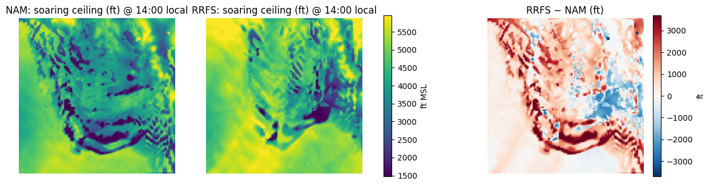
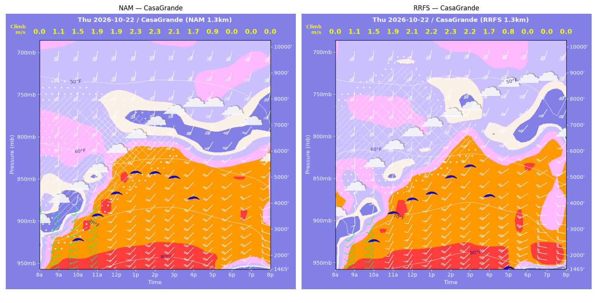
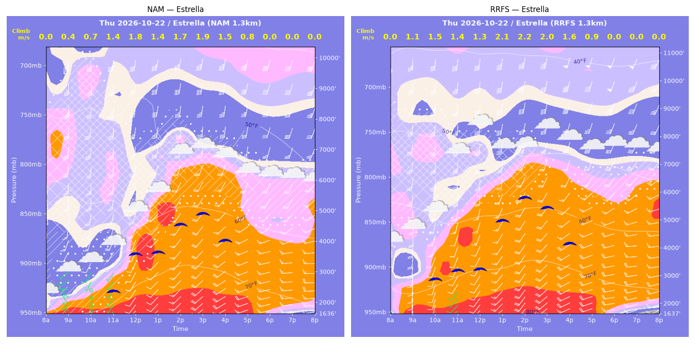
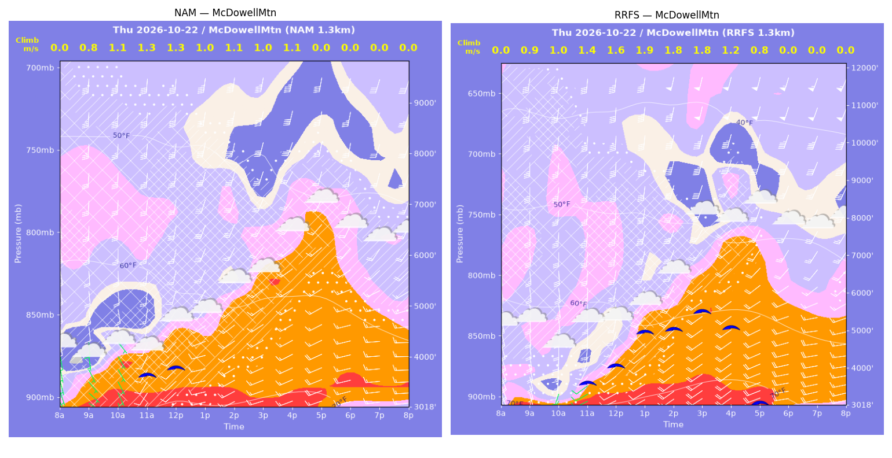
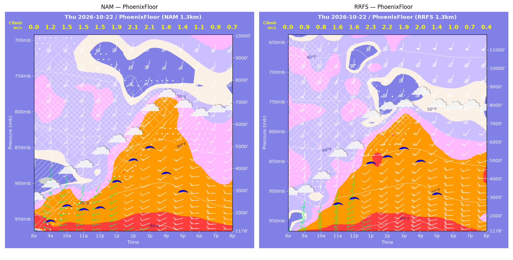
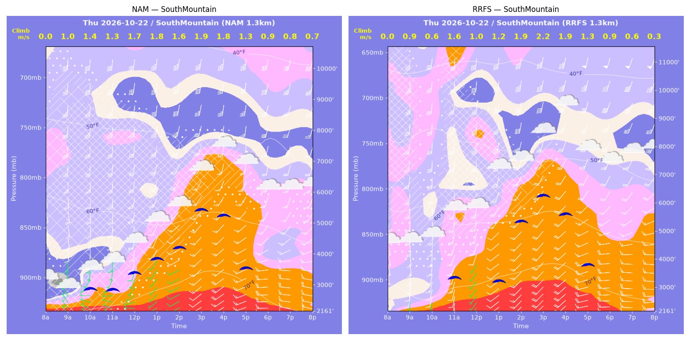
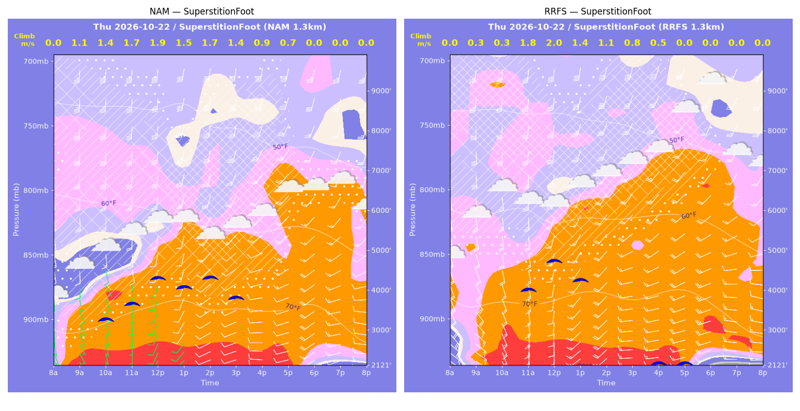
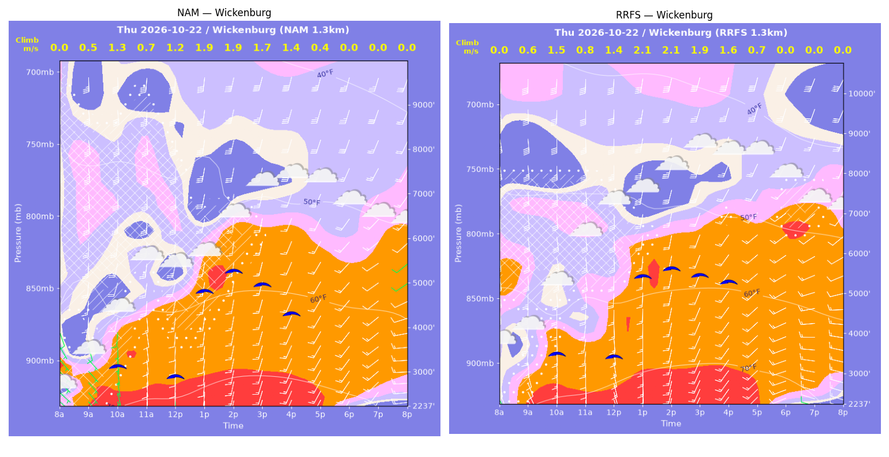

../runs/ab-phoenix-nam — model nam, cycle 2026-10-21 18z, dx 1.3333333740234374 km, 13 hours, grid 114×114../runs/ab-phoenix-rrfs — model rrfs, cycle 2026-10-21 18z, dx 1.3333333740234374 km, 13 hours, grid 114×114Grids identical; afternoon = 12:00–17:59 local (UTC-7). Δ = RRFS − NAM.
| Site | terrain ft | BL top (AGL) med|Δ| / bias (ft) | w* med|Δ| / bias (fpm) | Soaring ceiling med|Δ| / bias (ft) | BL wind speed med|Δ| / bias (kt) | BL wind dir med|Δ| / bias (deg) | 2 m temperature med|Δ| / bias (F) | Sfc LCL (AGL) med|Δ| / bias (ft) | Sensible heat flux med|Δ| / bias (W/m2) |
|---|---|---|---|---|---|---|---|---|---|
| PhoenixFloor | 1178 | 1085 / +1086 | 30 / +25 | 729 / +797 | 4 / +3 | 7 / -7 | 2 / +2 | 1229 / +1440 | 30 / -7 |
| SouthMountain | 2161 | 471 / +577 | 53 / -23 | 710 / +61 | 2 / +0 | 9 / +3 | 2 / +2 | 1776 / +1631 | 35 / -50 |
| SuperstitionFoot | 2122 | 674 / +366 | 97 / -77 | 276 / -553 | 2 / +1 | 12 / +8 | 1 / +1 | 1516 / +1284 | 29 / -44 |
| Estrella | 1637 | 706 / +683 | 63 / +32 | 428 / +440 | 1 / +1 | 6 / -1 | 2 / +2 | 1176 / +1552 | 58 / +21 |
| Wickenburg | 2238 | 506 / +467 | 44 / +46 | 482 / +471 | 2 / -0 | 9 / +4 | 2 / +2 | 1486 / +1482 | 45 / +38 |
| CasaGrande | 1466 | 367 / -309 | 17 / +4 | 222 / -143 | 4 / -3 | 9 / +7 | 1 / +1 | 388 / +409 | 7 / +24 |
| McDowellMtn | 3019 | 1073 / +1061 | 144 / +114 | 1952 / +1426 | 6 / +6 | 12 / -10 | 2 / +2 | 1086 / +1158 | 121 / +101 |
| Metric | n | median |Δ| | p90 |Δ| | bias |
|---|---|---|---|---|
| BL top (AGL) (ft) | 42 | 698 | 1273 | +562 |
| w* (fpm) | 42 | 47 | 139 | +17 |
| Soaring ceiling (ft) | 42 | 495 | 1902 | +357 |
| BL wind speed (kt) | 42 | 3 | 7 | +1 |
| BL wind dir (deg) | 42 | 9 | 14 | +1 |
| 2 m temperature (F) | 42 | 2 | 3 | +2 |
| Sfc LCL (AGL) (ft) | 42 | 1219 | 2037 | +1280 |
| Sensible heat flux (W/m2) | 42 | 30 | 155 | +12 |
diffmap_tol.png| local | BL top NAM/RRFS ft | w* NAM/RRFS fpm | ceiling NAM/RRFS ft | BL wind NAM/RRFS | T2 NAM/RRFS F | HFX NAM/RRFS |
|---|---|---|---|---|---|---|
| 08:00 | 0 / 0 | 0 / 0 | 1178 / 1178 | 2kt@303 / 1kt@124 | 75 / 75 | 0 / 0 |
| 09:00 | 1915 / 1115 | 233 / 173 | 1685 / 1178 | 1kt@249 / 7kt@200 | 76 / 77 | 103 / 73 |
| 10:00 | 2352 / 1530 | 297 / 157 | 2368 / 1178 | 6kt@188 / 7kt@205 | 78 / 78 | 175 / 40 |
| 11:00 | 2055 / 2751 | 292 / 320 | 2195 / 2686 | 6kt@189 / 14kt@192 | 78 / 81 | 189 / 188 |
| 12:00 | 2259 / 3297 | 289 / 315 | 2281 / 2957 | 11kt@198 / 10kt@185 | 79 / 82 | 168 / 150 |
| 13:00 | 3627 / 5410 | 379 / 448 | 3431 / 4831 | 17kt@202 / 21kt@200 | 81 / 84 | 236 / 263 |
| 14:00 | 4867 / 6000 | 422 / 430 | 4378 / 5161 | 21kt@213 / 25kt@202 | 82 / 85 | 244 / 211 |
| 15:00 | 5725 / 7036 | 418 / 384 | 4926 / 5581 | 21kt@215 / 25kt@202 | 83 / 86 | 202 / 128 |
| 16:00 | 4929 / 5902 | 307 / 385 | 3772 / 4881 | 16kt@210 / 20kt@209 | 83 / 85 | 93 / 154 |
| 17:00 | 3920 / 4198 | 275 / 278 | 2964 / 3123 | 15kt@229 / 16kt@230 | 81 / 83 | 84 / 81 |
| 18:00 | 2916 / 3387 | 210 / 205 | 1178 / 1178 | 14kt@256 / 18kt@258 | 79 / 80 | 50 / 40 |
| 19:00 | 2143 / 2114 | 176 / 142 | 1178 / 1178 | 16kt@263 / 19kt@268 | 77 / 79 | 40 / 22 |
| 20:00 | 1793 / 673 | 144 / 82 | 1178 / 1178 | 16kt@272 / 16kt@255 | 76 / 78 | 26 / 13 |
| local | BL top NAM/RRFS ft | w* NAM/RRFS fpm | ceiling NAM/RRFS ft | BL wind NAM/RRFS | T2 NAM/RRFS F | HFX NAM/RRFS |
|---|---|---|---|---|---|---|
| 08:00 | 0 / 0 | 0 / 0 | 2161 / 2161 | 4kt@289 / 6kt@187 | 75 / 74 | 0 / 0 |
| 09:00 | 945 / 879 | 200 / 172 | 2161 / 2161 | 3kt@313 / 11kt@183 | 71 / 74 | 131 / 90 |
| 10:00 | 1742 / 797 | 275 / 111 | 2951 / 2161 | 8kt@180 / 12kt@191 | 72 / 73 | 185 / 27 |
| 11:00 | 1837 / 2307 | 262 / 309 | 2925 / 3385 | 8kt@185 / 19kt@191 | 73 / 77 | 153 / 201 |
| 12:00 | 2327 / 2382 | 325 / 188 | 3454 / 2161 | 18kt@192 / 13kt@200 | 74 / 76 | 230 / 43 |
| 13:00 | 2916 / 3441 | 354 / 239 | 3895 / 3233 | 16kt@207 / 13kt@218 | 76 / 78 | 238 / 62 |
| 14:00 | 3826 / 5105 | 316 / 372 | 4233 / 5296 | 20kt@218 / 20kt@206 | 77 / 80 | 129 / 158 |
| 15:00 | 5289 / 6103 | 376 / 426 | 5432 / 6191 | 23kt@199 / 24kt@195 | 79 / 82 | 158 / 199 |
| 16:00 | 5109 / 5526 | 361 / 369 | 5243 / 5538 | 17kt@193 / 23kt@203 | 79 / 81 | 146 / 143 |
| 17:00 | 3379 / 3753 | 262 / 266 | 3560 / 3760 | 16kt@221 / 16kt@227 | 77 / 78 | 83 / 78 |
| 18:00 | 1736 / 2389 | 187 / 177 | 2161 / 2161 | 16kt@257 / 17kt@261 | 73 / 75 | 58 / 36 |
| 19:00 | 1617 / 1148 | 166 / 115 | 2161 / 2161 | 15kt@266 / 18kt@272 | 72 / 73 | 44 / 21 |
| 20:00 | 1168 / 260 | 136 / 53 | 2161 / 2161 | 16kt@278 / 16kt@261 | 70 / 72 | 33 / 9 |
| local | BL top NAM/RRFS ft | w* NAM/RRFS fpm | ceiling NAM/RRFS ft | BL wind NAM/RRFS | T2 NAM/RRFS F | HFX NAM/RRFS |
|---|---|---|---|---|---|---|
| 08:00 | 0 / 0 | 0 / 0 | 2122 / 2121 | 3kt@128 / 9kt@119 | 73 / 74 | 0 / 0 |
| 09:00 | 1896 / 363 | 213 / 62 | 2122 / 2121 | 8kt@179 / 16kt@123 | 76 / 77 | 79 / 9 |
| 10:00 | 2505 / 2772 | 284 / 56 | 3317 / 2121 | 10kt@170 / 20kt@172 | 78 / 80 | 142 / 0 |
| 11:00 | 2798 / 3278 | 328 / 348 | 3690 / 4046 | 16kt@177 / 20kt@174 | 79 / 81 | 197 / 201 |
| 12:00 | 3561 / 4118 | 373 / 390 | 4313 / 4723 | 22kt@189 / 22kt@190 | 81 / 81 | 228 / 226 |
| 13:00 | 3894 / 4576 | 295 / 276 | 4076 / 4218 | 19kt@192 / 14kt@202 | 81 / 82 | 103 / 72 |
| 14:00 | 3795 / 4148 | 339 / 212 | 4305 / 2121 | 18kt@203 / 20kt@212 | 80 / 81 | 160 / 35 |
| 15:00 | 3840 / 2638 | 270 / 164 | 3805 / 2121 | 17kt@213 / 17kt@243 | 80 / 80 | 79 / 25 |
| 16:00 | 3070 / 2404 | 186 / 98 | 2122 / 2121 | 14kt@233 / 17kt@246 | 79 / 80 | 32 / 6 |
| 17:00 | 2481 / 4951 | 139 / 0 | 2122 / 2121 | 14kt@238 / 20kt@219 | 79 / 80 | 16 / -7 |
| 18:00 | 4394 / 2863 | 0 / 0 | 2122 / 2121 | 16kt@219 / 21kt@243 | 76 / 74 | -4 / -9 |
| 19:00 | 1780 / 1386 | 0 / 0 | 2122 / 2121 | 14kt@253 / 15kt@276 | 73 / 71 | -5 / -4 |
| 20:00 | 1135 / 1327 | 0 / 0 | 2122 / 2121 | 10kt@279 / 13kt@282 | 71 / 70 | -9 / -9 |
| local | BL top NAM/RRFS ft | w* NAM/RRFS fpm | ceiling NAM/RRFS ft | BL wind NAM/RRFS | T2 NAM/RRFS F | HFX NAM/RRFS |
|---|---|---|---|---|---|---|
| 08:00 | 0 / 0 | 0 / 0 | 1637 / 1637 | 7kt@310 / 8kt@191 | 71 / 73 | 0 / 0 |
| 09:00 | 761 / 1552 | 78 / 208 | 1637 / 1637 | 4kt@271 / 19kt@185 | 71 / 76 | 9 / 89 |
| 10:00 | 1232 / 2621 | 147 / 289 | 1637 / 2920 | 9kt@213 / 17kt@195 | 72 / 77 | 39 / 143 |
| 11:00 | 1794 / 3463 | 273 / 276 | 2439 / 3215 | 12kt@214 / 15kt@193 | 74 / 79 | 173 / 94 |
| 12:00 | 3281 / 3918 | 363 / 261 | 3621 / 3246 | 19kt@196 / 14kt@191 | 77 / 80 | 226 / 70 |
| 13:00 | 4261 / 5036 | 284 / 423 | 3672 / 4954 | 18kt@209 / 20kt@188 | 78 / 81 | 83 / 235 |
| 14:00 | 5069 / 6111 | 337 / 440 | 4543 / 5731 | 18kt@196 / 29kt@192 | 81 / 83 | 117 / 218 |
| 15:00 | 5285 / 5850 | 372 / 396 | 4883 / 5365 | 22kt@187 / 22kt@198 | 81 / 83 | 151 / 166 |
| 16:00 | 4675 / 4646 | 299 / 307 | 4020 / 4083 | 18kt@199 / 19kt@206 | 79 / 81 | 88 / 97 |
| 17:00 | 2815 / 3925 | 155 / 176 | 1637 / 1637 | 15kt@236 / 15kt@242 | 76 / 78 | 19 / 21 |
| 18:00 | 2752 / 3374 | 0 / 0 | 1637 / 1637 | 14kt@233 / 17kt@247 | 74 / 75 | -10 / -12 |
| 19:00 | 2276 / 2076 | 0 / 0 | 1637 / 1637 | 15kt@248 / 18kt@266 | 72 / 73 | -10 / -11 |
| 20:00 | 1711 / 1383 | 0 / 0 | 1637 / 1637 | 16kt@269 / 18kt@258 | 69 / 71 | -6 / -8 |
| local | BL top NAM/RRFS ft | w* NAM/RRFS fpm | ceiling NAM/RRFS ft | BL wind NAM/RRFS | T2 NAM/RRFS F | HFX NAM/RRFS |
|---|---|---|---|---|---|---|
| 08:00 | 0 / 0 | 0 / 0 | 2238 / 2238 | 5kt@131 / 5kt@139 | 67 / 70 | 0 / 0 |
| 09:00 | 1247 / 1185 | 95 / 109 | 2238 / 2238 | 8kt@164 / 15kt@177 | 70 / 71 | 10 / 16 |
| 10:00 | 2316 / 2569 | 259 / 297 | 3175 / 3538 | 16kt@198 / 17kt@180 | 72 / 73 | 112 / 156 |
| 11:00 | 2539 / 1914 | 140 / 165 | 2238 / 2238 | 16kt@187 / 17kt@186 | 72 / 73 | 14 / 36 |
| 12:00 | 2819 / 2736 | 232 / 272 | 2951 / 3460 | 18kt@197 / 19kt@185 | 73 / 75 | 65 / 113 |
| 13:00 | 4214 / 4852 | 371 / 419 | 4823 / 5418 | 24kt@192 / 27kt@190 | 75 / 77 | 182 / 234 |
| 14:00 | 4909 / 5154 | 373 / 412 | 5259 / 5587 | 24kt@187 / 24kt@192 | 76 / 78 | 158 / 210 |
| 15:00 | 4767 / 5140 | 334 / 373 | 4947 / 5402 | 24kt@192 / 21kt@200 | 76 / 78 | 115 / 156 |
| 16:00 | 4754 / 5567 | 268 / 314 | 4295 / 5234 | 22kt@200 / 19kt@209 | 75 / 77 | 58 / 85 |
| 17:00 | 3954 / 4769 | 82 / 144 | 2238 / 2238 | 15kt@209 / 15kt@223 | 73 / 75 | -1 / 9 |
| 18:00 | 3796 / 3271 | 0 / 0 | 2238 / 2238 | 16kt@222 / 14kt@238 | 70 / 72 | -8 / -7 |
| 19:00 | 1795 / 1829 | 0 / 0 | 2238 / 2238 | 14kt@232 / 15kt@270 | 68 / 69 | -7 / -9 |
| 20:00 | 1456 / 1356 | 0 / 0 | 2238 / 2238 | 15kt@265 / 16kt@281 | 67 / 67 | -15 / -14 |
| local | BL top NAM/RRFS ft | w* NAM/RRFS fpm | ceiling NAM/RRFS ft | BL wind NAM/RRFS | T2 NAM/RRFS F | HFX NAM/RRFS |
|---|---|---|---|---|---|---|
| 08:00 | 0 / 0 | 0 / 0 | 1466 / 1466 | 3kt@197 / 3kt@203 | 74 / 75 | 0 / 0 |
| 09:00 | 1621 / 1550 | 218 / 224 | 1466 / 1466 | 6kt@222 / 9kt@195 | 77 / 78 | 100 / 114 |
| 10:00 | 2374 / 2229 | 293 / 297 | 2650 / 2595 | 9kt@200 / 10kt@191 | 79 / 80 | 167 / 185 |
| 11:00 | 3462 / 3499 | 367 / 380 | 3576 / 3644 | 15kt@201 / 14kt@187 | 82 / 83 | 226 / 248 |
| 12:00 | 4790 / 4077 | 369 / 421 | 4391 / 4143 | 23kt@191 / 23kt@188 | 84 / 84 | 165 / 289 |
| 13:00 | 5413 / 4337 | 460 / 432 | 5163 / 4348 | 29kt@193 / 24kt@201 | 85 / 85 | 286 / 294 |
| 14:00 | 5441 / 5172 | 447 / 443 | 5137 / 4942 | 30kt@195 / 25kt@205 | 86 / 86 | 260 / 267 |
| 15:00 | 5405 / 5869 | 407 / 423 | 4959 / 5332 | 31kt@197 / 25kt@206 | 85 / 87 | 198 / 206 |
| 16:00 | 4872 / 4874 | 326 / 329 | 4179 / 4203 | 27kt@207 / 24kt@215 | 84 / 85 | 112 / 116 |
| 17:00 | 4451 / 4187 | 168 / 151 | 1466 / 1466 | 21kt@222 / 22kt@233 | 82 / 83 | 16 / 13 |
| 18:00 | 4598 / 4588 | 0 / 0 | 1466 / 1466 | 19kt@229 / 20kt@235 | 78 / 79 | -15 / -22 |
| 19:00 | 2743 / 1505 | 0 / 0 | 1466 / 1466 | 18kt@243 / 20kt@276 | 76 / 76 | -13 / -20 |
| 20:00 | 1898 / 1787 | 0 / 0 | 1466 / 1466 | 11kt@270 / 17kt@278 | 73 / 72 | -4 / -8 |
| local | BL top NAM/RRFS ft | w* NAM/RRFS fpm | ceiling NAM/RRFS ft | BL wind NAM/RRFS | T2 NAM/RRFS F | HFX NAM/RRFS |
|---|---|---|---|---|---|---|
| 08:00 | 0 / 0 | 0 / 0 | 3019 / 3019 | 3kt@149 / 14kt@159 | 73 / 71 | 0 / 0 |
| 09:00 | 1090 / 979 | 151 / 178 | 3019 / 3019 | 6kt@176 / 19kt@168 | 70 / 72 | 45 / 89 |
| 10:00 | 1753 / 964 | 213 / 205 | 3019 / 3019 | 11kt@167 / 16kt@183 | 71 / 70 | 80 / 137 |
| 11:00 | 1777 / 1465 | 256 / 266 | 3714 / 3647 | 13kt@191 / 17kt@192 | 72 / 72 | 138 / 199 |
| 12:00 | 2157 / 1989 | 254 / 311 | 3847 / 4077 | 12kt@208 / 18kt@195 | 73 / 73 | 111 / 232 |
| 13:00 | 1942 / 3167 | 200 / 366 | 3019 / 4944 | 14kt@216 / 21kt@203 | 72 / 74 | 59 / 239 |
| 14:00 | 2483 / 3277 | 219 / 362 | 3019 / 4997 | 18kt@221 / 23kt@206 | 72 / 75 | 60 / 224 |
| 15:00 | 2992 / 4138 | 203 / 348 | 3019 / 5451 | 16kt@228 / 27kt@217 | 73 / 76 | 38 / 158 |
| 16:00 | 3363 / 5734 | 220 / 246 | 3019 / 5009 | 15kt@230 / 23kt@225 | 73 / 75 | 43 / 39 |
| 17:00 | 1991 / 2992 | 0 / 148 | 3019 / 3019 | 17kt@242 / 19kt@238 | 72 / 74 | -8 / 16 |
| 18:00 | 2937 / 3578 | 0 / 0 | 3019 / 3019 | 15kt@237 / 21kt@221 | 69 / 71 | -18 / -12 |
| 19:00 | 2370 / 2848 | 0 / 0 | 3019 / 3019 | 15kt@245 / 16kt@249 | 68 / 69 | -18 / -14 |
| 20:00 | 2047 / 2648 | 0 / 0 | 3019 / 3019 | 15kt@253 / 16kt@241 | 66 / 68 | -18 / -16 |
montage_PhoenixFloor.pngmontage_SouthMountain.pngmontage_SuperstitionFoot.pngmontage_Estrella.pngmontage_Wickenburg.pngmontage_CasaGrande.pngmontage_McDowellMtn.png